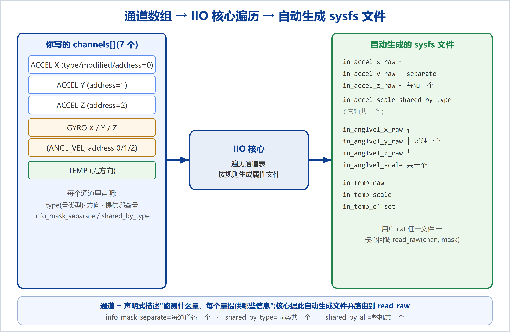

一个通道 = 传感器能测量的一个"量"。你有几个量,就定义几个通道。IIO 核心会遍历你的 iio_chan_spec[] 数组,照着每个通道自动生成对应的 sysfs 文件。MPU-6050 有 7 个通道:加速度 X/Y/Z、陀螺 X/Y/Z、温度。

| 通道定义 | 生成的 sysfs 文件 |
|---|---|
| 3 个 ACCEL(separate RAW) | in_accel_x_raw in_accel_y_raw in_accel_z_raw |
| ACCEL 的 SCALE(shared_by_type) | in_accel_scale(仨轴共用一个) |
| 3 个 GYRO | in_anglvel_x_raw _y_raw _z_raw |
| GYRO 的 SCALE | in_anglvel_scale(共用一个) |
| 温度(separate RAW+SCALE+OFFSET) | in_temp_raw in_temp_scale in_temp_offset |
这正是板子上 ls /sys/bus/iio/devices/iio:device0/ 看到的那堆文件——你没手写一个文件,全是核心照通道表生成的。
.type = IIO_ACCEL, // 量的类型 → 文件前缀:in_accel_ / in_anglvel_ / in_temp_ .modified = 1, // 这个通道"带修饰"(有方向) .channel2 = IIO_MOD_##axis, // 修饰是哪个:X/Y/Z → 文件名里出现 _x_/_y_/_z_ .info_mask_separate = BIT(IIO_CHAN_INFO_RAW), // 提供"原始值",每通道各一个 .info_mask_shared_by_type = BIT(IIO_CHAN_INFO_SCALE), // 提供"量程",同类型共用一个 .address = idx, // 驱动私有字段,IIO 不解读;存轴号 0/1/2,read_raw 用来算寄存器
.type 定前缀:ACCEL→in_accel_,ANGL_VEL→in_anglvel_,TEMP→in_temp_。.modified + .channel2 定方向后缀:modified=1 表示"有修饰",channel2=IIO_MOD_X → 文件名出现 _x_。温度没有方向,所以不写这两项 → 文件就是 in_temp_raw。.address 是你自己的草稿字段(IIO 不解读),存轴序号;read_raw 里 0x3B + chan->address*2 用它算寄存器。| 写法 | 含义 | 例子 |
|---|---|---|
info_mask_separate | 每个通道各自生成这个属性 | raw:x/y/z 各一个 |
info_mask_shared_by_type | 同 type 的通道共享一个 | scale:仨 accel 共用 in_accel_scale |
info_mask_shared_by_all | 所有通道共享一个 | 如 sampling_frequency |
用户读某个文件时,核心回调 read_raw(indio_dev, chan, *val, *val2, mask):
chan = 是哪个通道(带着它的 .type 和 .address)→ 你据此知道"读哪个量、哪个轴、哪个寄存器"。mask = 用户要哪种信息(RAW/SCALE/OFFSET)→ 你 switch(mask) 决定返回啥。所以通道表里声明的 .type/.address/info_mask,和 read_raw 里的 chan->type/chan->address/switch(mask) 是一一对应、配套使用的。
chan + mask 回调你的 read_raw。描述能力,而非手写接口——这就是通道的价值。配套代码examples/learning-driver/;系列文档见docs/learning/。仓库:github.com/fyy0619-cell/xiangmu